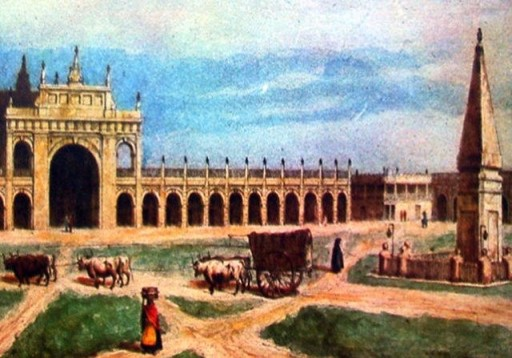

Proyecto: “Pirámide de mayo, primer monumento patrio”, para nuestra institución educativa, en que participan todos los estudiantes, familias y docentes del nivel primario junto a las bibliotecarias.
Esta propuesta se ha diseñado para formar parte del primer proyecto del nivel primario desde la Biblioteca con textos literarios e informativos.
Fundamentación del Proyecto
La Biblioteca San Luis Gonzaga en sus comienzos funcionó en la sese del Club Flandria, ubicado en la calle España, en un amplio salón del primer piso. En 1989 se realizó el traslado a un salón del Colegio San Luis Gonzaga (actuales salones de 3º y 6º año de primaria) permaneciendo abierta a la comunidad y siendo utilizada por los alumnos de la institución.
